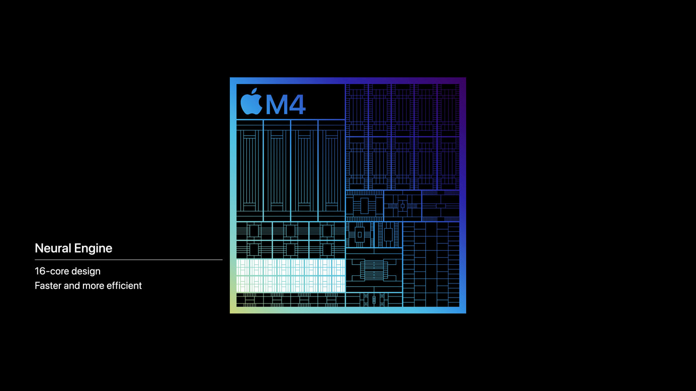
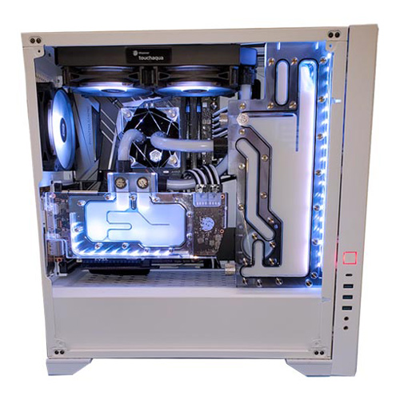

<!doctype html>
<html lang="en">
    <head>
        <meta charset="utf-8">
        <title>Building FPGA-based Machine Learning Accelerators in Python</title>
        <link rel="stylesheet" href="assets/dist/reveal.css">
        <link rel="stylesheet" href="assets/dist/theme/white.css" id="theme">
        <link rel="stylesheet" href="assets/plugin/highlight/stackoverflow-light.css">
        <script async src="https://www.googletagmanager.com/gtag/js?id=G-PJBFEVM4RY"></script>
        <script>
          window.dataLayer = window.dataLayer || [];
          function gtag(){dataLayer.push(arguments);}
          gtag('js', new Date());
          gtag('config', 'G-PJBFEVM4RY');
        </script>
        <style>
            .reveal .smallfont {
                font-size: 18px;
            }
        </style>
    </head>
    <body>
        <div class="reveal">
            <div class="slides">
                <section data-markdown>
                    <script type="text/template">
                        <!-- .slide: data-background-image="assets/img/cubist/lightbg.png" -->
                        <!-- .slide: style="color: white" -->
                        <h3 style="color: white;">Machine Learning Accelerators</h3>
                        <h3 style="color: white;">in Python</h3>

                        <br />

                        <span style="color:white;">Tim Paine / <a style="color: white; text-decoration: underline;" href="https://github.com/timkpaine">@timkpaine</a></span>

                        <br />

                        <div style="display: flex; flex-direction: row; justify-content: space-evenly; align-items: center;">
                            <a href="https://point72.com/cubist/"></img></a>
                            <a href="https://www.cs.columbia.edu"></img></a>
                        </div>
                    </script>
                </section>
                <section>
                    <section data-markdown data-separator="---">
                        <script type="text/template">
                            Quantitative Software Developer

                            Hardware Hobbyist (Academic Background)


                            

                            ---

                            ## Talk Overview

                            Background
                            <!-- .element: class="fragment" data-fragment-index="1" -->

                            Motivation
                            <!-- .element: class="fragment" data-fragment-index="2" -->

                            Examples - Precanned and From Scratch
                            <!-- .element: class="fragment" data-fragment-index="3" -->

                            Ecosystem and State of Open HW Dev
                            <!-- .element: class="fragment" data-fragment-index="4" -->
                        </script>
                    </section>
                </section>
                <section>
                    <section data-markdown data-separator="---">
                        <script type="text/template">
                            ## Background

                            How many people have programmed for:
                            <!-- .element: class="fragment" data-fragment-index="1" -->

                            CPU?
                            <!-- .element: class="fragment" data-fragment-index="2" -->

                            GPU?
                            <!-- .element: class="fragment" data-fragment-index="3" -->

                            Raspberry Pi / Arduino?
                            <!-- .element: class="fragment" data-fragment-index="4" -->

                            FPGA?
                            <!-- .element: class="fragment" data-fragment-index="5" -->

                            ---

                            ## Glossary

                            ---

                            CPU, GPU

                            **FPGA** - Field Programmable Gate Array
                            <!-- .element: class="fragment" data-fragment-index="1" -->

                            **ASIC** - Application Specific Integrated Circuit
                            <!-- .element: class="fragment" data-fragment-index="2" -->

                            ---

                            ## Accelerators

                            Cryptography, Compression, Network Processing
                            <!-- .element: class="fragment" data-fragment-index="1" -->

                            Graphics, Motion, Neural Engine, AI
                            <!-- .element: class="fragment" data-fragment-index="2" -->

                            ASICs / CoProcessors
                            <!-- .element: class="fragment" data-fragment-index="3" -->

                            FPGA
                            <!-- .element: class="fragment" data-fragment-index="4" -->

                            SmartNIC - Smart Network Interface Controller
                            <!-- .element: class="fragment" data-fragment-index="5" -->

                            DPU - Data Processing Unit
                            <!-- .element: class="fragment" data-fragment-index="6" -->

                            ---

                            SoC - System-on-chip

                            ---

                            <div style="display: flex; flex-direction: column; align-items: center">
                                <div style="display: flex; flex-direction: row">
                                    
                                    
                                </div>
                                <div style="display: flex; flex-direction: row">
                                    
                                    
                                </div>

                            </div>

                            &#169; Apple Inc.

                            ---

                            ## FPGA and SoC Manufacturers

                            | | | |
                            |:--|:--|:--|
                            |  |    | <span style="font-size: 30px;">Agilex, Stratix, Arria, Cyclone</span> |
                            |  |    | <span style="font-size: 30px;">Virtex, Kintex, Artix, Spartan, Zynq</span> |
                            |  |   | <span style="font-size: 30px;">iCE40</span> |
                            <!-- .element: class="fragment" data-fragment-index="1" -->

                            | | | |
                            |:--|:--|:--|
                            |  |  |  |
                            <!-- .element: class="fragment" data-fragment-index="2" -->

                            and more...
                            <!-- .element: class="fragment" data-fragment-index="2" -->

                            ---

                            ### Board and Module Manufacturers

                            | | | |
                            |:--:|:--:|:--:|
                            |  |  |  |
                            |  |  |  |
                            |  |  |  |

                            and more...

                            ---

                            ### Developing hardware designs

                            Development
                            <!-- .element: class="fragment" data-fragment-index="1" -->

                            Simulation and Testing (Verification)
                            <!-- .element: class="fragment" data-fragment-index="2" -->

                            Synthesis
                            <!-- .element: class="fragment" data-fragment-index="3" -->

                            IC Design / VLSI
                            <!-- .element: class="fragment" data-fragment-index="4" -->

                            SoC Building (Part of Development)
                            <!-- .element: class="fragment" data-fragment-index="5" -->

                            ---

                            ## Development

                            Verilog, SystemVerilog, VHDL
                            <!-- .element: class="fragment" data-fragment-index="1" -->

                            [SystemC](https://systemc.org)
                            <!-- .element: class="fragment" data-fragment-index="2" -->

                            [Chisel](https://www.chisel-lang.org), [Clash](https://clash-lang.org), [MyHDL](https://www.myhdl.org)
                            <!-- .element: class="fragment" data-fragment-index="3" -->

                            [Amaranth](https://github.com/amaranth-lang/amaranth), [migen](https://github.com/m-labs/migen)
                            <!-- .element: class="fragment" data-fragment-index="4" -->

                            ---

                            ### Verification

                            | | | |
                            |:--:|:--|:--|
                            |  | Xcelium/Jasper SuperLint | P |
                            |  | ModelSim/QuestaSim/QuestaLint | P |
                            |  | VCS/SpyGlass | P |
                            |  | Quartus | P |
                            |  | Vivado | P |
                            |  | Verilator | OSS |
                            |  | cocotb | OSS |
                            |  | Verible | OSS |

                            ---

                            ## Synthesis

                            | | | |
                            |:--:|:--|:--|
                            |  | Vivado | P |
                            |  | Quartus | P |
                            |  | Stratus HLS | P |
                            |  | Synphony HLS | P |
                            |  | Vitis HLS | P |
                            |  | Intel HLS | P |
                            |  | yosys | OSS |

                            ---

                            ## IC Design

                            | | | |
                            |:--:|:--:|:--:|
                            |   |  |  |
                            |   |  |  |

                            90nm+ process
                            <!-- .element: class="fragment" data-fragment-index="1" -->

                            ---

                            ## SoC Design

                            | | |
                            |:--:|:--|
                            |  | [Amaranth](https://github.com/amaranth-lang/amaranth) |
                            | | [LiteX](https://github.com/enjoy-digital/litex) |

                        </script>
                    </section>
                </section>
                <section>
                    <section data-markdown data-separator="---">
                        <script type="text/template">
                            Perspectives?

                            (We'll come back at the end)
                            <!-- .element: class="fragment" data-fragment-index="1" -->

                            ---

                            So what can you actually do in

                            ---

                            ~~2015~~

                            ---

                            **2024**

                            A lot!
                            <!-- .element: class="fragment" data-fragment-index="1" -->

                            ---

                            FPGA Development boards?

                            As expensive as always!
                            <!-- .element: class="fragment" data-fragment-index="1" -->

                            \$500+
                            <!-- .element: class="fragment" data-fragment-index="2" -->

                            ---

                            ### "School Boards" - $300

                            | | |
                            |:--:|:--|
                            |  | [Digilent Arty A7](https://digilent.com/shop/arty-a7-100t-artix-7-fpga-development-board/) |
                            | | [Terasic DE1](https://www.terasic.com.tw/cgi-bin/page/archive.pl?Language=English&CategoryNo=165&No=836#contents)

                            ---

                            But this is PyCon, and your the talk description said <$200!

                            ---

                            So let's talk about

                            
                            <!-- .element: class="fragment" data-fragment-index="1" -->

                        </script>
                    </section>
                </section>
                <section>
                    <section data-markdown data-separator="---">
                        <script type="text/template">
                            

                            ---

                            Started ~2016 by Xilinx

                            Zynq (FPGA + Arm) + Python
                            <!-- .element: class="fragment" data-fragment-index="1" -->

                            [Docs](https://pynq.readthedocs.io/en/latest/) / [Forum](https://discuss.pynq.io/)
                            <!-- .element: class="fragment" data-fragment-index="2" -->

                            ---

                            

                            &#169; Advanced Micro Devices, Inc.

                            ---

                            | | |
                            |:--:|:--:|
                            | |  |

                            [$129](https://www.newark.com/tul-corporation/1m1-m000127dev/tul-pynq-z2/dp/13AJ3027?st=pynq%20z2)

                            ---

                            ## tl;dr

                            ```python
                            import numpy as np
                            from pynq import allocate, Overlay

                            ol = Overlay('example.bit')

                            input_buffer = allocate(shape=(5,), dtype=np.uint32)
                            output_buffer = allocate(shape=(5,), dtype=np.uint32)

                            for i in range(5): input_buffer[i] = i

                            ol.axi_dma.sendchannel.transfer(input_buffer)
                            ol.axi_dma.recvchannel.transfer(output_buffer)
                            ol.axi_dma.sendchannel.wait()
                            ol.axi_dma.recvchannel.wait()
                            ```

                            ---

                            That's pretty cool...

                            But what if I want to raise VC money?
                            <!-- .element: class="fragment" data-fragment-index="1" -->

                            (Or get accepted to PyCon?)
                            <!-- .element: class="fragment" data-fragment-index="2" -->

                            ---

                            

                            ---

                            What do we need, and can we get by with just Python?

                            ---

                            ## Modelling

                            
                            <!-- .element: class="fragment" data-fragment-index="1" -->

                            <br />

                            
                            <!-- .element: class="fragment" data-fragment-index="2" -->

                            <br />

                            
                            <!-- .element: class="fragment" data-fragment-index="3" -->

                            <br />

                            
                            <!-- .element: class="fragment" data-fragment-index="4" -->

                            ---

                            ## Synthesis

                            We'll use Xilinx's Vivado for Synthesis (free)

                            Total cost of software:
                            <!-- .element: class="fragment" data-fragment-index="1" -->

                            $0
                            <!-- .element: class="fragment" data-fragment-index="2" -->

                            ---

                            

                            ---

                            

                            ---

                            Let's look at code
                        </script>
                    </section>
                </section>
                <section>
                    <section data-markdown data-separator="---">
                        <script type="text/template">
                            ## Example Model - from scratch

                            I don't trust examples, so let's build our own from scratch

                            ---

                            Let's predict a sine wave

                            Apart from errors due to quantization and sampling,

                            we should be able to do this with a trivial model

                            

                            ---

                            ## Model

                            ```python
                            class Net(Module):
                                def __init__(self, n_neurons, input_shape):
                                    super(Net, self).__init__()
                                    self.fc1 = Linear(input_shape, n_neurons)
                                    self.fc2 = Linear(n_neurons, 1)

                                def forward(self, x):
                                    out = self.fc1(x)
                                    out = self.fc2(out)
                                    return out
                            ```

                            ---

                            ## Quantization-aware Model

                            ```python
                            class QuantNet(Module):
                                def __init__(self, n_neurons, input_shape):
                                    super(QuantNet, self).__init__()
                                    self.inp = QuantIdentity(bit_width=8)
                                    self.fc1 = QuantLinear(input_shape, n_neurons)
                                    self.fc2 = QuantLinear(n_neurons, 1)

                                def forward(self, x):
                                    out = self.quant_inp(x)
                                    out = self.fc1(out)
                                    out = self.fc2(out)
                                    return out
                            ```

                            ---

                            ## Torch -> QONNX

                            ```python
                            from brevitas.export import export_qonnx

                            export_qonnx(
                                my_trained_model,
                                torch.randn(1, 20),
                                "mymodel.onnx",
                            )
                            ```

                            ---

                            ## QONNX -> FINN

                            ```python
                            cfg = DataflowBuildConfig(
                                output_dir="./build",
                                mvau_wwidth_max=80,
                                target_fps=1000000,
                                synth_clk_period_ns=10.0,
                                board="Pynq-Z1",
                                shell_flow_type=ShellFlowType.VIVADO_ZYNQ,
                                steps=steps,
                                verify_steps=[],
                            )
                            ```

                            ---

                            ```python
                            steps=[
                                "step_qonnx_to_finn", "step_tidy_up", "step_streamline",
                                "step_convert_to_hw", "step_create_dataflow_partition",
                                "step_specialize_layers",
                                "step_target_fps_parallelization",
                                "step_apply_folding_config", "step_minimize_bit_width",
                                "step_hw_codegen", "step_hw_ipgen", "step_set_fifo_depths",
                                "step_out_of_context_synthesis",
                                "step_synthesize_bitfile",
                                "step_make_pynq_driver",
                                "step_deployment_package",
                            ]

                            build_dataflow_cfg("./build/mymodel.onnx", cfg)
                            ```

                            ---

                            ## FINN Outputs

                            Model bitfile we can load on FPGA
                            <!-- .element: class="fragment" data-fragment-index="1" -->

                            Python/numpy model driver
                            <!-- .element: class="fragment" data-fragment-index="2" -->

                            Some utilities
                            <!-- .element: class="fragment" data-fragment-index="3" -->

                            **NOTE** Some aspects of the model might not be convertible to hardware (e.g. fixed->floating multiplier)
                            <!-- .element: class="fragment" data-fragment-index="4" -->

                            ---

                            ```python
                            from pynq.pl_server.device import Device
                            from driver_base import FINNExampleOverlay

                            accel = FINNExampleOverlay(
                                bitfile_name="finn-accel.bit",
                                platform="zynq-iodma",
                                io_shape_dict=io_shape_dict,
                                batch_size=1,
                                device=Device.devices[0],
                            )
                            ```

                            ---

                            ```python
                            test = []
                            for _ in range(len(y_test) - 20):
                                batch = y_test[_:_+batch_size].reshape(1, 20)

                                predicted_value = accel.execute(batch)

                                test.append(predicted_value[0])
                            ```

                            ---

                            


                            ---

                            Can we do a little better?

                            
                            <!-- .element: class="fragment shadow" data-fragment-index="1" -->

                            ---

                            

                            ---

                            ## Example Model - MNIST

                            Let's try an off-the-shelf Xilinx example
                            <!-- .element: class="fragment" data-fragment-index="1" -->

                            
                            <!-- .element: class="fragment shadow" data-fragment-index="1" -->


                            [xilinx/finn-examples](https://github.com/xilinx/finn-examples)
                            <!-- .element: class="fragment" data-fragment-index="2" -->

                            [prebuilt accelerators](https://github.com/xilinx/finn-examples?tab=readme-ov-file#example-neural-network-accelerators)
                            <!-- .element: class="fragment" data-fragment-index="3" -->

                            ---

                            ## MNIST

                            Let's try a live demo too!

                            ---

                            I'm convinced!

                            But this is still a bit of a "toy"
                            <!-- .element: class="fragment" data-fragment-index="1" -->

                            What's next?
                            <!-- .element: class="fragment" data-fragment-index="2" -->
                        </script>
                    </section>
                </section>
                <section>
                    <section data-markdown data-separator="---">
                        <script type="text/template">
                            | | | |
                            |:--:|:--:|:--:|
                            |  |  |  |
                            |  |  |  |
                            |  | <span style="font-size: 200px">?</span> |  |

                            ---

                            ## Costs

                            HW Costs
                            <!-- .element: class="fragment" data-fragment-index="1" -->

                            Software Costs
                            <!-- .element: class="fragment" data-fragment-index="2" -->

                            Other Tooling Costs
                            <!-- .element: class="fragment" data-fragment-index="3" -->

                            (Good proxy for impact of open source)
                            <!-- .element: class="fragment" data-fragment-index="4" -->

                            ---

                            | | | |
                            |:--:|:--:|:--:|
                            | `$40` / `$0` | `$500` / `$0` | `$10,000` / `$0*` |
                            | `$150` / `$0` | `$1,000`  | `$30,000` / `$0*` |
                            | `$150` / `$0` | ? | `$15,000` / `$5,000/yr` |

                            ---

                            ## Why?

                            For our bigger and higher performance accelerators, this tier has the
                            combination of features and size we need
                            <!-- .element: class="fragment" data-fragment-index="1" -->

                            But more importantly for the ecosystem...
                            <!-- .element: class="fragment" data-fragment-index="2" -->

                            This is the sweet spot for Open Source (and many other things)
                            <!-- .element: class="fragment" data-fragment-index="3" -->

                            This is where **Power Users** live
                            <!-- .element: class="fragment" data-fragment-index="4" -->

                            ---

                            ## My Requirements

                            200k+ LUTs on FPGA
                            <!-- .element: class="fragment" data-fragment-index="1" -->

                            PCIe/Lightning
                            <!-- .element: class="fragment" data-fragment-index="2" -->

                            Network
                            <!-- .element: class="fragment" data-fragment-index="3" -->

                            1GB+ RAM
                            <!-- .element: class="fragment" data-fragment-index="4" -->

                            `<$1,000` (ideally `<$500`)
                            <!-- .element: class="fragment" data-fragment-index="5" -->

                            ---

                            As of 2024, it exists!
                            <!-- .element: class="fragment" data-fragment-index="1" -->

                            Several comparable models, from providers earlier in the presentation
                            <!-- .element: class="fragment" data-fragment-index="2" -->

                            `$300` - `$1,500` range
                            <!-- .element: class="fragment" data-fragment-index="3" -->

                            Pretty powerful!
                            <!-- .element: class="fragment" data-fragment-index="4" -->

                            ---

                            

                            

                            [NiteFury II](https://rhsresearch.com)

                            [LiteX Acorn Baseboard](https://github.com/enjoy-digital/litex-acorn-baseboard)

                            ---

                            But how do I program PCIe / Network / RAM in addition to my hardware?

                            Can I do it in **Python**?
                            <!-- .element: class="fragment" data-fragment-index="1" -->

                        </script>
                    </section>
                </section>
                <section>
                    <section data-markdown data-separator="---">
                        <script type="text/template">
                            

                            ---

                            [LiteX](https://github.com/enjoy-digital/litex) and [Amaranth](https://amaranth-lang.org/docs/amaranth/latest/) are tools for building SoCs

                            **Python!**

                            ---

                            Can represent pure hardware (HDL)

                            Can represent complicated systems, on-chip networks, etc
                            <!-- .element: class="fragment" data-fragment-index="1" -->

                            Can link together separate IP (e.g. connect to an existing Verilog project)
                            <!-- .element: class="fragment" data-fragment-index="2" -->

                            ---

                            [litex-hub/litex-boards](https://github.com/litex-hub/litex-boards)

                            

                            ---

                            ```python
                            class BaseSoC(SoCCore):
                                def __init__(self, sys_clk_freq=100e6, **kwargs):
                                    # DDR3 SDRAM
                                    self.ddrphy = s7ddrphy.A7DDRPHY(
                                        platform.request("ddram"),
                                        memtype="DDR3",
                                        nphases=4,
                                        sys_clk_freq=sys_clk_freq,
                                        iodelay_clk_freq=200e6)
                                    self.add_sdram("sdram",
                                        phy=self.ddrphy,
                                        module=MT41K512M16(sys_clk_freq, "1:4"),
                                        l2_cache_size=kwargs.get("l2_size", 8192)
                                    )

                            ```

                            ---

                            ```python
                            # PCIe
                            self.comb += platform.request("pcie_clkreq_n").eq(0)
                            self.pcie_phy = S7PCIEPHY(platform,
                                platform.request("pcie_x4"),
                                data_width=128,
                                bar0_size =0x20000)
                            self.add_pcie(phy=self.pcie_phy, ndmas=1, address_width=64)
                            platform.add_period_constraint(
                                self.crg.cd_sys.clk,
                                1e9/sys_clk_freq,
                            )
                            ```

                            ---

                            ## User designs

                            ```python
                            self.leds = LedChaser(
                                pads=platform.request_all("user_led"),
                                sys_clk_freq=sys_clk_freq
                            )
                            ```

                            ---

                            Integrate with existing hardware code (e.g. FINN-generated code)

                            Write new hardware code in `migen`, `amaranth`, or traditional HDLs like Verilog
                            <!-- .element: class="fragment" data-fragment-index="1" -->

                            System Integration and on-chip Networks
                            <!-- .element: class="fragment" data-fragment-index="2" -->

                            Build tool integration (e.g. Vivado, Yosys)
                            <!-- .element: class="fragment" data-fragment-index="3" -->

                            ---

                            150+ boards

                            [Fantastic Tutorials](https://github.com/litex-hub/fpga_101)
                            <!-- .element: class="fragment" data-fragment-index="1" -->

                            [Lots of demos and examples (and talks!)](https://youtu.be/MkVX_mh5dOU)
                            <!-- .element: class="fragment" data-fragment-index="2" -->

                            ---

                            No demo today :-(

                            Run out of time and doesn't run on my Macbook
                            <!-- .element: class="fragment" data-fragment-index="1" -->

                            ... maybe next year ;-)
                            <!-- .element: class="fragment" data-fragment-index="2" -->

                            ---

                            ## Takeaway

                            Just like you can get a GPU and start using it for programming tasks
                            <!-- .element: class="fragment" data-fragment-index="1" -->

                            You can get an FPGA and start using it
                            <!-- .element: class="fragment" data-fragment-index="2" -->

                            Harder to do, more domain knowledge
                            <!-- .element: class="fragment" data-fragment-index="3" -->

                            Getting easier and easier
                            <!-- .element: class="fragment" data-fragment-index="4" -->


                        </script>
                    </section>
                </section>
                <section>
                    <section data-markdown data-separator="---">
                        <script type="text/template">
                            ## Ecosystem Thoughts

                            Never been easier or more accessible
                            <!-- .element: class="fragment" data-fragment-index="1" -->

                            Major companies like Xilinx/AMD are active in OSS
                            <!-- .element: class="fragment" data-fragment-index="2" -->

                            Not there yet, but momentum is growing and 10 year change has been **dramatic**
                            <!-- .element: class="fragment" data-fragment-index="3" -->

                            Python-based "on ramps" to getting started in hardware development
                            <!-- .element: class="fragment" data-fragment-index="4" -->

                            ---

                            OSS tools like Verilator and cocotb are industry-standard


                            Ecosystem is really exciting
                            <!-- .element: class="fragment" data-fragment-index="1" -->

                            ---

                            

                            ---

                            ### 10 Projects and Orgs To Follow

                            | | | | |
                            |:--:|:--:|:--:|:--:|
                            | <a href="https://www.yosyshq.com/about"></a> | <a href="https://amaranth-lang.org/docs/amaranth/latest/">Amaranth</a> | <a href="https://www.chipsalliance.org"></a> | <a href="https://fastmachinelearning.org">FastML</a>  |
                            | <a href="https://fastmachinelearning.org/hls4ml/"></a>  | <a href="https://github.com/pytorch/glow"></a> |<a href="https://github.com/google/xls"></a>  | <a href="https://github.com/sld-columbia/esp">ESP</a> |
                            | <a href="https://fastmachinelearning.org"></a> | <a href="https://tinytapeout.com" style="font-size: 30px;">Tiny Tapeout</a> | | |


                        </script>
                    </section>
                </section>
                <section>
                    <section data-markdown data-separator="---">
                        <script type="text/template">
                            ## Q/A

                            <span>Tim Paine / <a style="text-decoration: underline;" href="https://github.com/timkpaine">@timkpaine</a></span>

                        </script>
                    </section>
                </section>
            </div>
        </div>
        <script src="assets/dist/reveal.js"></script>
        <script src="assets/plugin/markdown/markdown.js"></script>
        <script src="assets/plugin/highlight/highlight.js"></script>
        <script src="assets/plugin/notes/notes.js"></script>
        <script src="assets/plugin/math/math.js"></script>
        <script>
            Reveal.initialize({
                center: true,
                controls: true,
                history: true,
                plugins: [ RevealMarkdown, RevealHighlight, RevealNotes, RevealMath ],
                progress: true,
                slideNumber: true
            });
        </script>

    </body>
</html>
